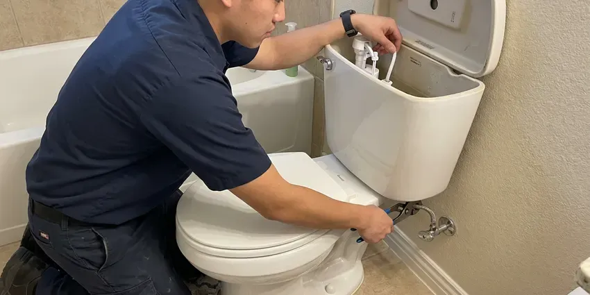
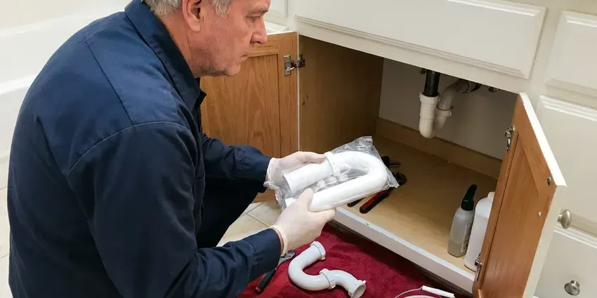

Sink Installation in Huron, SD
New sink for the kitchen or bath in Huron, SD? HWR Plumbing mounts it, connects it and leak-tests it in one visit for most styles.
- Same-Week Installs
- Kitchen and Bath Sinks
- Old Sink Removed
- Licensed & Insured

Book a Sink Install in Huron, SD This Week
You get a written price before we start and a leak-tested sink when we leave.
Setting Sinks the Right Way in Huron, SD
HWR Plumbing installs kitchen and bathroom sinks in Huron, from simple drop-in swaps to undermount bowls on new stone. We start by checking the cutout against the sink template, since a mismatch means a rocking bowl or a gap at the rim. Drain and supply work comes next. Most single-sink installs take half a day.
Work we handle every week:
- Hang pedestal and wall-mount sinks on carriers or blocking
- Swap drop-in sinks without recutting the counter
- Replace old stops with quarter-turn valves

Additional Bathroom Plumbing Services in Huron, SD
From toilets to showers, our bathroom plumbing team in Huron, SD repairs, installs, and replaces every fixture with clean, code-compliant work.


Toilet Repair service for Huron homeowners


Customers
Why Choose HWR Plumbing for Sink Installation in Huron, SD?
Undermount and vessel sinks punish shortcuts. An undermount bowl that is glued without clips can drop months later, and a vessel bowl set on the wrong drain can overflow because there is no overflow channel to catch it. Clips go on, and the matching drain goes in.
- Foundation Integrity, A dry install protects the subfloor and the framing below the sink.
- Quality Workmanship, Rims sealed all the way around and traps set without stress on the joints.
- Remodel Friendly, We schedule around your counter and cabinet crews.
Citywide Coverage
Remodels across town keep our crews busy. We work alongside counter shops and cabinet installers on jobs all over the area, so we know their schedules and can usually fit the plumbing in right behind them. It often saves a week of waiting.
Experienced Team
Every install has a licensed plumber on it. Helpers carry and clean, but a licensed plumber makes the drain connections, sets the stops and signs off on the final leak test before we leave. That is not negotiable.
Safety-First Approach
Every install meets South Dakota plumbing code on the drain side. We use a trap with a 2 to 4 inch seal, tied to a vented drain within the allowed trap arm length. Sewer gas stays out.
Trusted Certified Huron Plumbing Services Professionals
At HWR Plumbing, we take pride in licensed, certified plumbing services throughout Huron, SD. Those papers on the wall mean something. Our plumbers hold recognized industry credentials, and they follow strict safety and quality rules on every repair, installation and maintenance call we run.
Call Us Now PHCC Plumbing Contractor Recognition
PHCC Plumbing Contractor Recognition Better Business Bureau (BBB) Accreditation
Better Business Bureau (BBB) Accreditation Angi Certified Pro
Angi Certified Pro ISO 9001 Quality Management Certification
ISO 9001 Quality Management CertificationEvery Kind of Sink We Install in Huron, SD
Pedestal Sink Installation in Huron, SD
Pedestal sinks hide almost nothing. The supply stops and the trap sit right behind the column, so we center the drain stub, use chrome or polished brass trap parts, and set the stops tight to the wall where the pedestal can hide them. The wall needs solid blocking. The basin hangs from it, not the pedestal.

Undermount Clips and Cure Time in Huron
Undermount bowls need overnight to cure. The silicone bead under the rim reaches handling strength in a few hours but needs about a day before it carries the weight of a full basin of water and a pot leaning on the edge. The bowl stays braced until our return. Plumbing goes in on the second visit.
Vessel Sink Installation in Huron, SD
Vessel sinks sit on top of the counter. Since the rim sits higher, the faucet has to be taller or wall-mounted, and the drain must match whether the bowl has an overflow. No overflow means no slotted drain. Getting that wrong leaves water under the bowl.
Kitchen Sink Replacement in Huron
Pulling the old kitchen sink is half the job. Old basket strainers fuse to the bowl, the disposal has to come off its mounting ring, and the dishwasher drain hose needs to be rerouted to the new disposal or tailpiece with a high loop. Then the new bowl goes in. We reuse the disposal if it still runs well.
Utility Sink Installation in Huron
Laundry and garage tubs take dirty water and a lot of it. The tub goes on a solid stand or bracket with a 1-1/2 inch trap, plus a faucet tall enough to fill a bucket. Hard water is the norm across much of South Dakota, and many groundwater sources carry dissolved minerals like calcium, magnesium, sulfate and iron. We add a cleanout plug.
Sink Replacement and Upgrades in Huron
Upgrading the sink is a cheap way to refresh a room. A same-size drop-in swap usually takes a morning, and a deeper bowl may only need a new trap. Countertop changes add time. We tell you which one you are looking at.
Bathroom Sink Installation in Huron, SD
Bathroom sinks are lighter but fussier. Faucet holes must match the faucet, single hole, 4 inch centerset or 8 inch widespread, and the overflow must suit the drain. The spec sheet gets read first. Mismatches get caught before the counter is cut.

Drop-In Sink Installation in Huron, SD
Drop-in sinks are the most forgiving style. The rim hides small cutout flaws, so laminate tops take a drop-in with just a size check and the right sealant. Mounting clips snug it down. Stainless drop-ins weigh very little.
Nearby Sink Installers Near Me in Huron, SD
Searching sink installation near me in Huron turns up a lot of handymen. A licensed plumber sets the sink, connects the drain to code and replaces the stops if they are worn, so the install passes inspection and the cabinet stays dry. That difference shows up later.
Install near me should include a firm date. We book sink installs on a specific day, give you a two-hour arrival window, and coordinate with your counter installer so the plumber is not standing in the kitchen waiting on stone. Booking happens over the phone. The number is (605) 480-9736.
HWR Plumbing at a Glance
- Fully licensed plumbing team covering Huron, SD
- 24/7 emergency service with same-day scheduling
- Upfront, flat-rate pricing before work begins
- 4.8-star rated by 304+ South Dakota customers
Huron Map
Huron Information
- Population
- 14,618
- Area codes
- Local
- Service area
- Huron and towns within a 40 mile drive
- Nearby
- Mitchell, Madison, Watertown, Brookings
Hard water is the norm across much of South Dakota, and many groundwater sources carry dissolved minerals like calcium, magnesium, sulfate and iron. Plenty of Huron, SD homes still have their original shutoffs and drain stubs, and a sink install is the cheapest time to replace them.
Expert Services
Reach out to HWR Plumbing for reliable plumbing work done by licensed pros in Huron, SD.
Our Specialized Plumbing Services in Huron, SD
At HWR Plumbing, you get every kind of plumbing service from one company across Huron, SD. From leak detection to full system installs, our team works fast and charges fair prices on homes and commercial properties alike. Here are the core services we offer:


Our Sink Installation Process in Huron, SD
No surprises on install day. This is the plan.
Call for a Quote
Call (605) 480-9736 with the sink model or a link to it. We confirm what it needs.
Site Check
A plumber looks at the cutout and the plumbing under it before install day.
Install Day
We remove the old sink, set the new one and connect the drain and supplies.
Frequently Asked Questions About Sink Installation in Huron
Plan on $200 to $600 in labor. The sink style drives most of the cost, then any drain moves or stop replacements. You get the number in writing.
For a like-for-like swap, usually no. Adding a sink where there was none or upgrading to a double vanity with a new drain usually counts as new work that needs a permit and inspection. You will know before we begin.
Sometimes, for function. Shallow bowls or narrow doubles are good reasons to replace a working sink. Style alone is a fair reason.
It depends on the scope. A replacement in the same spot with the same drain is usually considered repair, but new drain lines or a second bowl usually require a permit from the city or county. Rules vary by city.
Usually two to three hours. Vanity tops go fastest, and pedestals take longer if the wall needs blocking. We patch, but you paint.
Our labor is warrantied in writing. If a joint we made leaks or a clip we set loosens during the warranty term, we come back and fix it at no charge, and the term is printed on your invoice. Fixtures carry the maker's warranty.
Not always. A working faucet with a matching hole pattern can be reused, though a worn one is worth replacing now. Changing it later means another visit.
Laminate pairs best with drop-in sinks. Stone and solid surface take undermounts since the edge polishes, while butcher block usually gets a drop-in or apron sink. Check with us before ordering.
What People Are Saying About Our Plumbing Experts?

Megan L.
Our upstairs tub drained so slowly that every shower turned into a bath. HWR Plumbing pulled a wad of hair out of the stopper and then snaked the line past the trap. Three months later it still drains fast.
Drain Cleaning · Huron, SD
Laura S.
Our 40 gallon tank started leaking from the bottom after thirteen years. The tech hauled the old one out, set a new unit with a fresh expansion tank, and had hot water running in about four hours. He took the old tank with him too.
Water Heater Replacement · Aberdeen, SD
Karen W.
After our third pinhole leak in copper, we stopped patching. HWR Plumbing gave us a written plan room by room and repiped the house in PEX while we stayed in it. The crew covered our floors every morning and cleaned up every night.
Repiping · Watertown, SDEmily R.
The shutoff valve under our kitchen sink snapped off in my hand on a Sunday morning. HWR Plumbing had someone out by early afternoon. He replaced both angle stops with quarter turn valves and showed me where our main shutoff was, which I honestly did not know.
Plumbing Repair · Aberdeen, SDRachel N.
Hard water was leaving white crust on every faucet and our dishwasher was struggling. The tech tested the water, recommended a softener sized for a family of five, and installed it with a bypass valve in one afternoon. The spots on our glasses are gone.
Water Softener · Huron, SD
Robert G.
The camera showed a full break in our clay sewer line near the street. HWR Plumbing replaced it with a trenchless pipe burst, so the only digging was two small pits in the yard. They let us watch the footage before and after.
Sewer Line Replacement · Aberdeen, SD